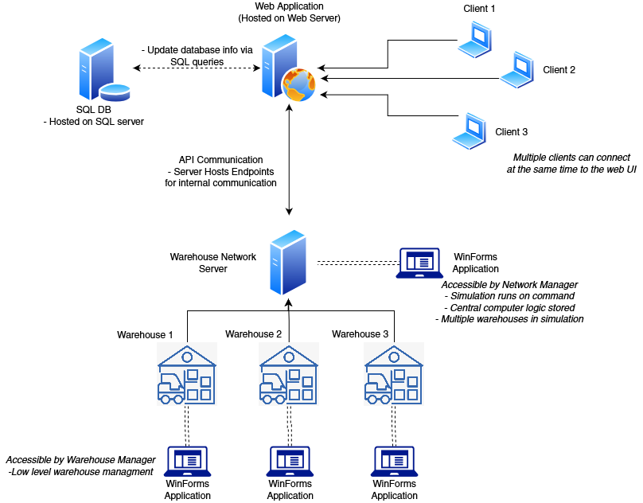
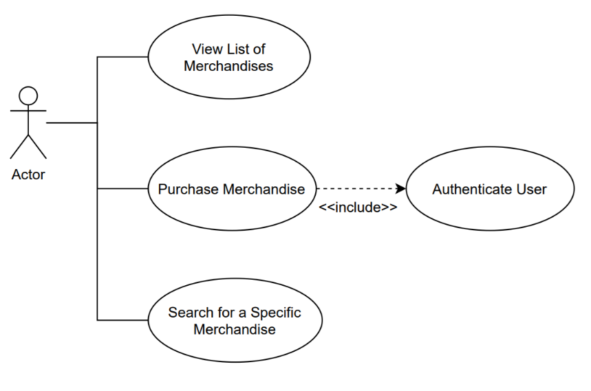
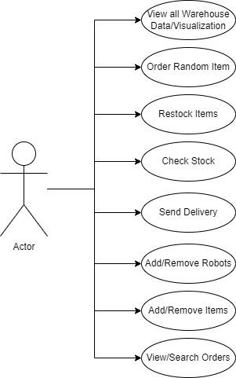
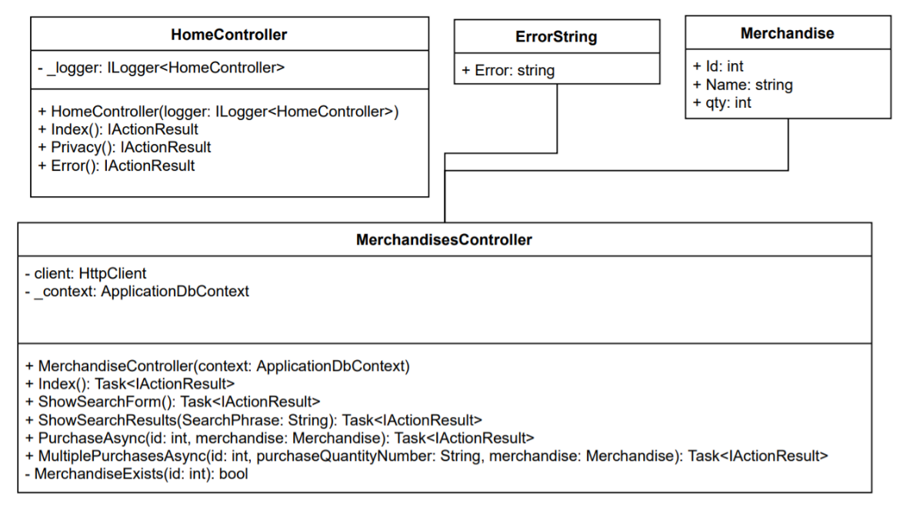
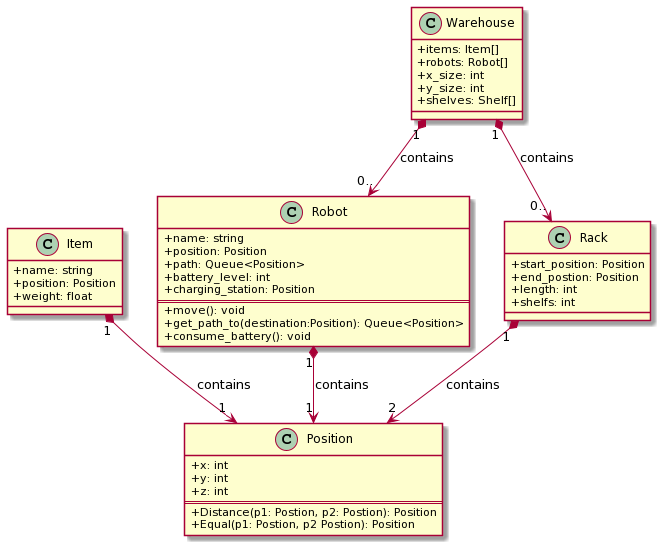
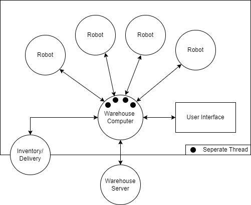
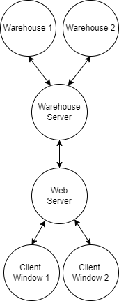
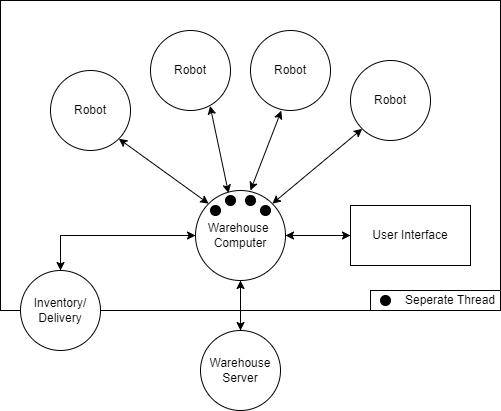
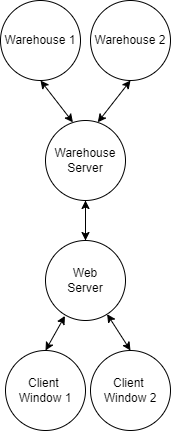
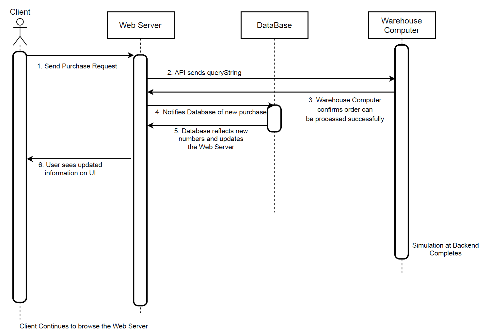

Amazon Warehouse Simulator
From October of 2021 up until December of 2021 I worked on a 2d warehouse simulator using c# and the .Net framework.
This is a open source project and it is possible to run it using the following github link: https://github.com/pedrorgleite/AmazonWarehouseSimAlso it is possible to watch a quick demo using the following link:
https://www.youtube.com/watch?v=_wKsc0idEKY
Summary
The project is developed to fulfill the ability of Amazoom’s warehousing automation. With a single click from a user on the web frontend, the requested items are submitted to the warehouse network and automatically loaded onto a delivery truck.
The web front end is feature rich interface for the user while, due to it being a web app, retaining maximum compatibility with various devices. The user can browse all the items available in the entire warehouse network and submit orders for various items. The interface also allows for account creation, management, and validation.
The manager can view the warehouse network at the administration terminal. The central computer for the warehouses will show the manager where each the merchandise is located, how many are in stock, and the status of an order. The manager inputs the capacity of the truck in the loading bay, and he may choose when to have the truck depart, allowing for flexible order fulfillment. A list of existing items can be imported into the warehouse’s central computer in a csv file, and each warehouse can retrieve the information from the csv file to populate the items in stock. Similarly, a warehouse configuration file can be loaded, allowing for flexible creation of new warehouse layouts.
The administration terminal also notifies the manager of items that are low in-stock and allows the manager to place a restock order of the items. It also allows the manager to add new merchandises or remove old merchandises as needed. The manager may also search the status of the order using an Order ID number. The manager can also see the list of orders that are waiting for delivery and can make decision of shipping the delivery truck based on that.
System Overview
There are two primary components of this system that is interdependent on each other for the entire system to run as a whole. The first system component is the Windows Form Application, which implements the warehouse simulation. This includes the warehousing logistics, robot pathfinding, items restocking, central computer notifications, dock scheduling, delivery vehicle queueing, order delivering, along with other associated warehousing tasks when a transaction is executed.
The second system component is the Web Application built with the MVC framework. This is the web server that the client connects to when he visits Amazoom. The MVC framework contains the contents of the website that is served to the client, with most of the flow logic contained in the Controller. Once a client sends a request to purchase an item, an API will communicate with the server (Windows Form Application that was previously described), and the API of the server will process the request accordingly. This includes extracting the API query string, and tasking the robots based on the request the user sends. The database which the merchandise information is contained will consequently be updated, and this update is reflected on the client’s User Interface based on another API call.
In general, the Web Application will communicate with the Windows Forms Application bidirectionally through API calls. The SQL server will be accessed by the API calls and the updates as results of the API requests and responses will be reflected on both the server and the User Interface. The overlaying system architecture will be included in System Diagrams.
Technical Stack
As described above, the front-end is comprised of the ASP.NET Web Application that is developed in C# language. This is developed using the Model View Controller (MVC) model such that the code organization is relatively easy to change. It has advantages such as easy integration with imported libraries, massive support from the Microsoft Community, and uses utilities carried from these libraries such as Authentication and SQL database querying. This also allows multiple clients to connect to the same website and place orders simultaneously. As it is a web application, it can be upgraded and scaled up if the user traffic increases.
The back-end application is developed in C# as a Windows Forms application running on .NET CORE. This decision considers the front-end UI integration which also runs on the .NET CORE, making the integration seamless. WinForms is considered an appropriate choice for back-end application since only the manager needs to have access to warehouse simulation and management. Commands will only be executed by the warehouse manager, and WinForms can directly manage the data flow from those commands. The communication between the web interface and the back-end application is executed via API queries, which consists of API listener developed with C# and inserts SQL instructions upon request.
System Architecture

The High-level architecture diagram above indicates the major components of the system. The first one is Web Application, which can be connected to by multiple clients and the second component is the Warehouse Network Server, which is hosted by the Server near the middle of the diagram. The Web Application and the Warehouse Network Server will communicate via API calls. The details of API calls are documented under Communication Protocols section.
Use Cases
Client Interface Use-Case Diagram

Warehouse Interface Use-Case Diagram

Class Diagram
Web UI UML Class Diagram

The four primary classes utilized by the Web UI is drawn in the above diagram. The HomeController is a controller that re-directs calls coming from the index.cshtml page of the /Home path. The Merchandise class is communicated frequently to the MerchandisesController class, which the control logic of the Merchandise instances are orchestrated inside the MerchandisesController class. As shown, the methods that executes individual commands are listed under the MerchandisesController class, which directs the data towards the next methods that should be invoked.Warehouse Interface Use-Case Diagram

In an individual warehouse, the warehouse class knows the information contained in Racks and Robots. The Position of the item can be contacted by all three classes, Item, Robot, and Rack such that operation of the next step of the simulation can be done.Full System Warehouse Class Diagram

Object Interaction Diagrams
Object Interaction Diagrams

Full System Warehouse Class Diagram

Sequence Diagrams
The following sequence diagram describes the high-level sequence of the transactions when an user browses the web interface and sends a request to purchase a merchandise to the web server. As seen, the user will make the purchase request to the web server. The web server will convert that request in the format of a queryString and send it to the warehouse computer. The warehouse computer can confirm that the order can be successfully placed, and responds to the web server. The web server will then take that response and notify the database of the new changes that has been made, and the reflected database information will be presented to the website.
Object Interaction Diagrams

Full System Warehouse Class Diagram


Communication Protocols
Primary communication between the Web Interface and the server logic is implemented via an HTTP endpoint utilizing GET requests. In a high-level summary, the user’s request to place a purchase sends a query string into the API endpoint hosted on the Warehouse Network Server. This query string is constructed in the Web Server Controller for Merchandise page, responsible for data flow logic in the Web Interface. Subsequently, the GET request will wait for a response, either allowing or disallowing the purchasing of the item.In this communication, the query string is constructed using parameters such as the Merchandise ID, quantity the user wants to purchase, and the username. Upon transmission, they would be consumed by the endpoint. The endpoint has multiple query switch statements and can dynamically identify the query string and respond to GET requests, allowing the Warehouse to reflect the changes made by the user (E.g. Purchasing of merchandises), as well as updating the quantity of items back to the Web Interface.
The Web Interface will update its list of merchandise after the purchase by executing SQL commands directly into the database, upon verification that the order is successfully placed. The Web Server will verify this request from the API response string generated by the Server that’s doing the simulation.
Functional Specifications
The following is a functional description of all public functions. There will also be a brief description of the classes and namespaces.
Warehouse Classes and Functions
All the overarching C# files used for the warehouse use the namespace “Amazoom” with the individual class files using the namespace “Amazoom.Classes”. This is utilized to allow all functions to communicate with each other efficiently.
The files
Program
andStartup
initialize and run the warehouse Webserver and Winforms. The Main function operates by calling the CreateWebHostBuilder function to make the webserver and a new WarehousesViewer called to make theClasses
The Coordinate class contains a function Coordinate which takes in and stores an x, y and z coordinate system for other methods that may call it.
The Item class takes in and stores data on an item including, database id, name, weight, aisle side and total number of the items. The class also contains the function:
- ToString which returns the item name as a string.
The itemCoordinate class which takes in and stores an x, y, and z coordinate similarly to the Coordinate but also includes aisle side and the number of items at the location.
The Job class file has multiple public functions.
- currentPath: returns a peek at the next job in the queue with no inputs,
- currentTarget: returns the target position of a robot’s current job,
- Name: returns the item name and quantity separated by a “:”,
- Job: function takes in and stores the job and item to be added to a job queue
- PeekNextNode: returns a peek at the current path node.
- UpdatePath: tasks a new path and updates the next position
- DequeueNextNode: returns the next node in the current path and removes the node from the queue.
- Peek: the function returns a peek at the job queue.
- Enqueue: the function takes a robot path and add it to the queue.
- Dequeue: the function returns the latest job in the queue.
- Any: returns a boolean if there is a current path for the robot.
The Node class contains a function Node which takes in and stores if the next coordinate location is and will be empty and the corresponding x and y coordinate. The class also contains the function:
- fCost which calculates a value which is used for pathfinding based on the current gCost and hCost variable values.
The NodeWarehouse class contains a function NodeWarehouse which takes the current warehouse, warehouse size, and warehouse racks data to then create a grid via a private function CreateGrid. The class also contains the function:
- GetNeighbours which takes a node within the warehouse grid and checks all surrounding nodes in a grid if it is a valid position within the constraints of the warehouse.
The PathFinder class contains multiple functions.
- PathFInder: takes in and stores a nodeWarehouse object.
- FindPath: takes in the current robot, the starting coordinates and the target coordinate and returns the best path for the robot to take to achieve reach the target position.
- RetracePath: takes in the robot, start node and end node and returns a modified robot path which is used to avoid collisions with other robots.
- GetDistance: takes in two nodes and returns the distance between the two.
The Rack class contains multiple functions.
- Rack: takes in and stores a name, starting position, rack length, warehouse, max number of shelves and max weight able to be handled by a shelf.
- AddItem: takes in an item class, and updates the rack position and adds the item to the rack.
The Robot class contains multiple functions.
- IsBusy: checks and returns if the robot is currently on a job.
- Job: returns a peek at the robot’s current job.
- nextNode :returns a peek at the next node the robot would move to.
- Robot: takes in and stores all the required information to run the robot including the name, charging station position, warehouse, position, method, battery level, and weight limit which battery depletion and charging rates being set as well.
- GetItem: takes an item and quantity and creates a job to move a robot from the item’s shelf location to the loading dock which is added to the job queue.
- RestockItem: takes an item and quantity and creates a job to move a robot from the loading dock to item’s shelf location which is added to the job queue.
- Update: takes in and returns nothing but is responsible for updating the status of a robot repending on its position and if it is busy.
- Move: is responsible for moving the robot and collision avoidance.
- UpdatePath: updates the robot’s path.
- GetDeliveryJob: takes an item, quantity, client name and job Id and returns a new job to be added to the job queue.
- GetRestockJob: takes an item and quantity and returns a new job to be added to the job queue.
- GetTargetPos: takes in an item and calculates a target position coordinate based on the coordinate and the left/right shelf designation.
- CollisionAvoidance: takes in the next node of a robot’s path and returns a boolean if there is a robot in the next node.
The RobotPath class contains multiple functions used to sort out the robot’s path. The primary initializing method RobotPath creates an empty path queue and path length.
- Peek: returns a peek at the next path node.
- Enqueue: takes a node and adds it to the path queue.
- Dequeue: returns a node and removes it from the path queue.
- Any: returns the next path.
The Warehouse class contains multiple functions used to sort out the robot’s path. The primary initializing method Warehouse takes a warehouse name and its dimensions and initializes the warehouse by calling InitializeWarehouse, warehouseDrawer and nodeWarehouse.
- Items: creates a list of Items.
- Orders: returns a list of all jobs.
- maxItems: calculates and returns the maximum possible amounts of racks in a row.
- DeliveryItem: takes in an item, quantity and client name and sets the order to an available robot and adds it to a queue if none are available.
- RestockItem: takes an item and quantity and sets the job to an available robot and adds it to a queue if none are available.
- Draw: takes in an event argument and is used to draw objects in the winform.
- AddInitializedItem: takes an item, rack and target location and adds the items to the appropriate locations.
- AddItem: takes an item and a quantity and adds it to the warehouse.
- FindItem: takes an item’s name and returns the Item class for that item.
- AddRobot: adds a robot to the list of robots.
- GetAllJobs: returns a job list.
- GetOrders takes the above job list and returns a processed job list.
The WarehouseDrawer class contains multiple functions used to draw the warehouse in our warehouse visualization.
- WarehouseDrawer: takes in a picture box and a warehouse class to then sort out the size of the warehouse that is draw in the Winform.
- Draw: takes in an event argument and calls the appropriate functions to create the warehouse simulation.
- DrawWarehouse: takes a graphic and adds the grid and colors to the display the warehouse.
- DrawRobots: takes a graphic and adds the grid and colors to the display the robots.
- DrawRacks: takes a graphic and adds the grid and colors to the display the racks
Controllers
ValuesController.cs: This is the controller file that contains the several classes which serve several key functions. As the main controller of the server and the administration WinForms window, it contains the functions such as the API listener which responds to the API GET requests made by the Web Server, the function that updates the quantity of merchandise after a purchase is made and such. A list of the classes and their methods are listed below:
- Class PlaceOrderController: public ActionResult Get(string id): This function listens to any API calls made by the Web Server, and takes the query string made by the GET request as its argument. It distinguishes if a request to purchase a merchandise can be successfully completed, then returns the response to the Web Server.
- Class updateListController: public ActionResult Get(): This function is invoked when the user clicks on the “Merchandise” menu, and makes a function call to Program.MainForm.updateList() which updates the list of merchandise, and returns an OK response with the string containing the information of the updated list of merchandise.
- Class RestockController: public ActionResult Get(string id): An id of the order is parsed into this method for it to perform re-stocking of a merchandise. The method will return an OK reponse upon completion.
- Class StockLevelController: public ActionResult Get(string id): This function simply takes the id of the order and returns the user with the update
WarehousesViewer
The WarehousesViewer controls the code for the main warehouse WinForms. It has functionality to view all orders and initiate a WarehouseViewer for each warehouse. The functions are as follows:
- WarehousesViewer: the function calls the functions InitializeComponent and InitializeWarehouse to initialize the warehouse.
- InitializeWarehouse: This function reads a csv file from the “Warehouse Layout.csv” and passes the warehouse name and dimensions to the WarehouseViewer function, initializes the objects in the racks with the InitializeOrders function, and adds the warehouse name to the winform.
- PlaceOrder: takes an item name, quantity, and client name and returns a string containing if the order has failed or succeeded. It ensures there is enough items in the warehouse to complete the order and splits up the order based on available quantity per warehouse.
- RestockItem: takes in an item a name and quantity and returns a string if the restocking was successful or not.
- UpdateList: updates all item quantities and returns a warehouse list containing all items in a warehouse in the format %name-quantity.
- GetItemStockLevel: takes an items name and returns the total inventory available for this item from all warehouses.
- InitializeOrders: reads the orders from the orders.csv file and assigns them to the list of orders.
WarehouseViewer
The WarehouseViewer controls the code for the Winforms for each initiated warehouse. They contain the methods listed below:
- NameOfWarehouse: This simply returns the name of the warehouse from a get request by the user.
- WarehouseViewer: Constructor for the WarehouseViewer, takes the parameters of the warehouse such as the dimensions of the warehouse as well as a name of the warehouse.
- GetItems: returns the list of items inside the warehouse.
- PlaceOrder: Intakes the name of the merchandise as well as the quantity the user wants to purchase. If the order can be successfully placed, it places it and returns a success message, otherwise it returns a message indicating the failure of the order placement.
- RestockItem: The name and the quantity of the merchandise that needs to be restocked are parsed as arguments, it finds the item of the merchandise to restock and restocks it in the database.
- GetItemStockLevel: The name of the merchandise is parsed as its argument, this method searches through the database and returns the quantity of that particular merchandise. If the merchandise does not exist, return –1.
- InitializeItems: As the name indicates, this method populates the items contained in each warehouse through reading a CSV file defined internally, assigns to each of the items a location and places them on the shelves upon the launch of the program.
Web UI/Web Server Classes & Functions
Summary: The Model View Controller (MVC) framework is used to construct the Web UI for the front end of this project. In essence, the files defined in the MVC folders define the logic flow of the web server along with its treatment of user actions.
Please note that all of the functions described below are a part of the Amazoom-UI-with-DB project folder.
Models
Merchandise.cs: This class and its functions are all publicly accessible. This class defines the properties associated with the object instantiated as Merchandise. This is important to note since the Database Schema is generated through Object Relational Mapping, the Migrations file defines the script that generates the schema can be read through the 20211130231315_initialsetup.cs. For developers that are reviewing the code for the first time, this is important to mention since if anything in the database schema needs to be changed, this can be automated using this migrations file.
Controller
HomeController.cs: This class contains the controller logic when the Web UI is initially connected by the user. The code contains procedural flow and re-directional calls to the Views() pages that would allow the users to navigate to and from the default front page, namely Home. Publicly accessible functions used for the main code procedural flow are individually named below, followed by a brief description:
- public IActionResult Index(): Returns the homepage to the Homepage.Index Views page.
- public IActionResult Privacy(): Re-directs the user to the Privacy Page
- public IActionResult Error(): Re-directs the user to the default Erro Page
MerchandiseController.cs: Contains the Web UI’s central logic for user actions such as purchasing of merchandises, constructing the query string for purchase actions, and user authentication. The controller logic works coherently with the data parsed from the .cshtml files that contains user query action items. A list of essential publicly accessible functions are listed below, along with a brief description of their purpose:
- public async Task<IActionResult> Index(): Directs the user with a views page of the list of merchandises, namely Merchandise.Index.cshtml file that displays the merchandises, with the merchandises’ information. Note that this is the general pattern of the syntax handler of the MVC framework, in which the Index() assumes the name of the caller and returns the relative path from that caller. In this case, the caller is Merchandise, and the Index() assumes the name of Merchandise.Index to return that cshtml file. This convention is followed through all of the functions that make calls to Index().
- public async Task<IActionResult> ShowSearchForm(): Directs the user to views page of the SearchForm, namely ShowSearchForm.cshtml.
- public async Task<IActionResult> ShowSearchResults(String SearchPhrase): Intakes argument of the SearchPhrase (merchandise the user is searching for), and returns with a view of synchronized list of items it has found.
- public async Task<ActionResult> PurchaseAsync(int id, [Bind("Id,Name,qty")] Merchandise merchandise): When a singular purchase has been made by the user, this function is accessed by the Merchandise.index.cshtml file and factors the arguments: {id, merchandise}. Note that merchandise is constructed as a result of the binding in the parameters {Id, Name, qty} parsed. This would then call the API endpoint of the server that controls the warehousing, by parsing it a constructor created from the information of the merchandise that’s purchased AND the username of the client that executes this transaction.
- public async Task<ActionResult> MultiplePurchasesAsync(int id, String purchaseQuantityNumber, [Bind("Id,Name,qty")] Merchandise merchandise): This function takes the merchandise’s information as arguments, and sends an API request to the warehouse server that allows the client to make multiple purchases of the same item. If an order is placed successfully, this re-directs to the OrderPlaced Views page; if the order cannot be placed, it will re-direct to the OrderFailed Views page with the pertinent information of why this purchase has failed. It should also be noted here that an user must be logged in and registered with the system in order to place an item.
The rest of the controller functions are not publicly accessible by the stable version of the application.
Testing
Throughout this project, portions of code are separated and developed individually. Testing is executed on different sections of the code continuously and asynchronously as different requirements are implemented.
The Web UI is tested through a series of user interactions with the Website. The Web UI communicates with the API endpoint hosted by the server and therefore is most apparent when there is an error with the API processing of the string.
The following common cases were tested to ensure the frequent transactions initiated by the user can be successfully executed:
- Searching of a merchandise that doesn’t exist in the database nor in the warehouse.
- Searching of a merchandise with completely CAPITAL letters or completely lowercase letters to see if the search query is case-sensitive.
- Searching of a merchandise that has just been newly added by the Amazoom administrator from the server side, and the quantity of the merchandise is accurately reflected on the website.
- Purchasing of an item that is displayed.
- Purchasing multiple quantity of a singular item which has been displayed, that EXCEEDS the quantity of that particular item which is currently in stock.
- Upon purchase transaction is completed, go back to the list of merchandises and see if the quantity of the merchandise has been reflected based on the recent purchase.
The server code that hosts the WinForms application and the simulation of the warehouse is tested by visually inspecting the simulation interface against different actions. Since the pathfinding algorithm is quite dynamic and may calculate paths with slight variations in different stages of the simulation, they are tested in edge cases to capture errors. The edge cases are:
- All of the warehouse robots are given instructions to fulfill orders that are parsed by the queue: this exposes the robots to potential chances of collision, and the collision avoidance algorithm can be tested and visualized by the Administration Interface.
- Robot collecting an order with the merchandise comprised of weights larger than the robot’s maximum capacity: demonstrates the activation of another robot which then fulfills the part of the order that is excessive of the weight limit of the first robot.
- Robot of different warehouses collecting the items that’s included in the same order: the tester can purchase an item that’s stored in multiple warehouses and see if the robots are responsive in each warehouse that contains the merchandise if the number of merchandise cannot be completely retrieved from a singular warehouse.
- Upon the addition of a completely new item, it can be reached by the robots through its newly assigned co-ordinates.